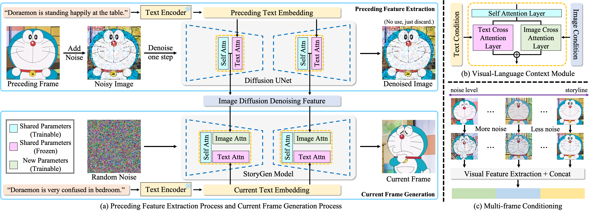
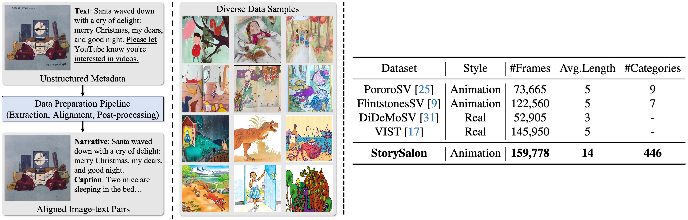
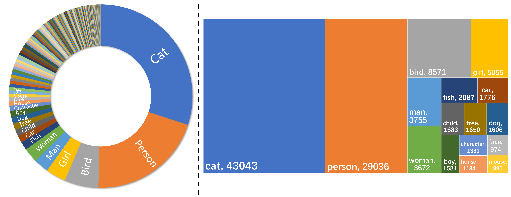
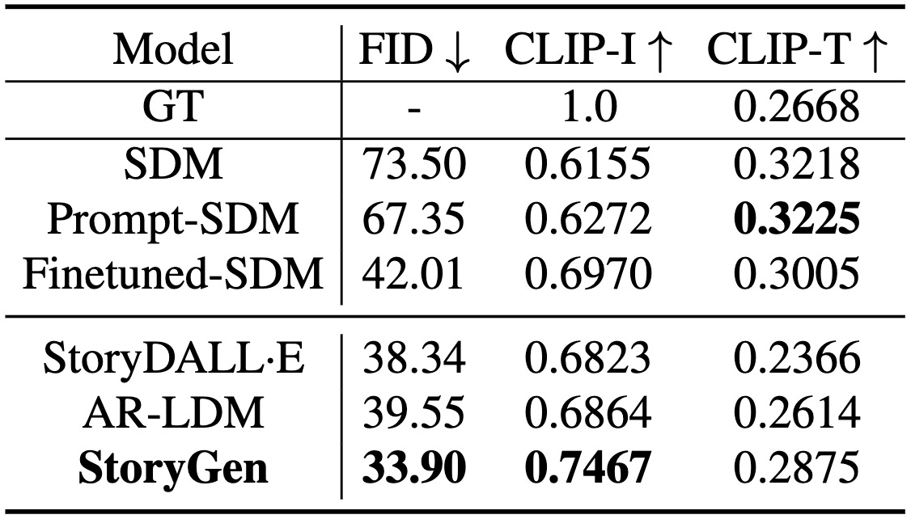
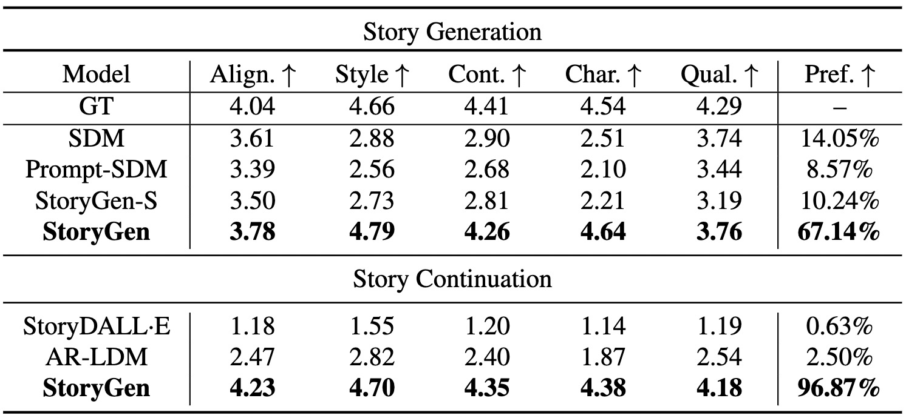

StoryGen
Intelligent Grimm - Open-ended Visual Storytelling via Latent Diffusion Models
|
|
1CMIC, Shanghai Jiao Tong University
|
2Meituan Inc., China
|
3Shanghai AI Lab
|

An illustration of open-ended visual storytelling.
In practice, users can feed a unique and engaging story synthesized by a large language model into our proposed StoryGen model to generate a sequence of images coherently,
denoted as open-ended visual story generation.
And they can also provide a pre-defined character with its corresponding storyline, to perform open-ended visual story continuation.
We recommend the reader to zoom in and read the story.
Abstract
Generative models have recently exhibited exceptional capabilities in text-to-image generation, but still struggle to generate image sequences coherently.
In this work, we focus on a novel, yet challenging task of generating a coherent image sequence based on a given storyline, denoted as open-ended visual storytelling.
We make the following three contributions:
(i) to fulfill the task of visual storytelling,
we propose a learning-based auto-regressive image generation model, termed as StoryGen,
with a novel vision-language context module, that enables to generate the current frame by conditioning on the corresponding text prompt and preceding image-caption pairs;
(ii) to address the data shortage of visual storytelling,
we collect paired image-text sequences by sourcing from online videos and open-source E-books,
establishing processing pipeline for constructing a large-scale dataset with diverse characters, storylines, and artistic styles, named StorySalon;
(iii) Quantitative experiments and human evaluations have validated the superiority of our StoryGen,
where we show StoryGen can generalize to unseen characters without any optimization,
and generate image sequences with coherent content and consistent character.
Code, dataset, and models are available at: [StoryGen].
StoryGen Architecture

Architecture Overview.
(a) Our StoryGen model utilizes current text prompt and previous visual-language contexts as conditions to generate an image,
iteratively synthesizing a coherent image sequence.
Note the parameters of the corresponding attention layers are shared between Diffusion UNet and StoryGen.
To avoid potential ambiguity, the parameters are not shared across UNet blocks in a single model.
(b) The proposed Visual-Language Context Module can effectively combine the information from current text prompt and contexts from preceding image-caption pairs.
(c) We add more noise to reference frames with longer temporal distances to the current frame as positional encoding to distinguish the temporal order.
The multiple features can then be directly concatenated to serve as context conditions.
StorySalon Dataset

StorySalon Dataset Overview.
Left:
Dataset Pipeline and Visualization: Meta-data sourced from the Internet undergoes a three-step pipeline including frame extraction, visual-language alignment and post-processing,
resulting in properly aligned image-text pairs.
And our StorySalon dataset contains diverse styles and characters.
Right:
Dataset Statistics: Our StorySalon dataset far exceeds previous story generation datasets in terms of the total number of images, average length, and categories of characters included.

Dataset Statistics Results.
Left:
Distribution of text-image pairs classified by the main character categories in our collected StorySalon dataset.
Right:
The top 16 character categories and corresponding numbers in StorySalon, cover a wide range of character types.
Results
Quantitative Results

Comparison result of automatic metrics on StorySalon test set.
Prompt-SDM denotes Stable Diffusion model with cartoon-style-directed prompts and Finetuned-SDM represents a Stable Diffusion model with all parameters fine-tuned on our StorySalon dataset.

Comparison result of human evaluation.
GT stands for ground truth from the test set.
StoryGen-S represents StoryGen without context conditions.
The abbreviated metrics are Text-image alignment, Style consistency, Content consistency, Character consistency, image quality, and Preference, respectively.
Qualitative Results

The images in orange, green, and blue boxes are generated by
Prompt-SDM, AR-LDM, and StoryGen respectively.
Our synthesis results exhibit impressive performance superiority in terms of style, content and character consistency, text-image alignment, and image quality.
Please refer to the paper Appendix for more qualitative results.
Ablation Study Results

Ablation studies on consistency.
We incorporate our proposed Visual-Language Context Module into a pre-trained SDM,
and train it on MS-COCO with other parameters frozen.
The content consistency of single-object and multi-object generation on COCO and real-data has demonstrated the effectiveness of our module.
Please refer to the paper Appendix for experiment details and quantitative results.
More Visualization

Visualization results of Story Generation.
The images in orange, red, pink, and blue boxes are generated by
SDM, Prompt-SDM, StoryGen-Single, and StoryGen respectively.

Visualization results of Story Continuation.
The images in gray, green, and blue boxes are generated by
StoryDALL-E, AR-LDM, and StoryGen respectively.

Visualization results of StoryGen on COCO in single image-text context pair scenario.

Visualization results of StoryGen on COCO in multiple image-text context pairs scenario.
Acknowledgements
Based on a template by Phillip Isola and Richard Zhang.